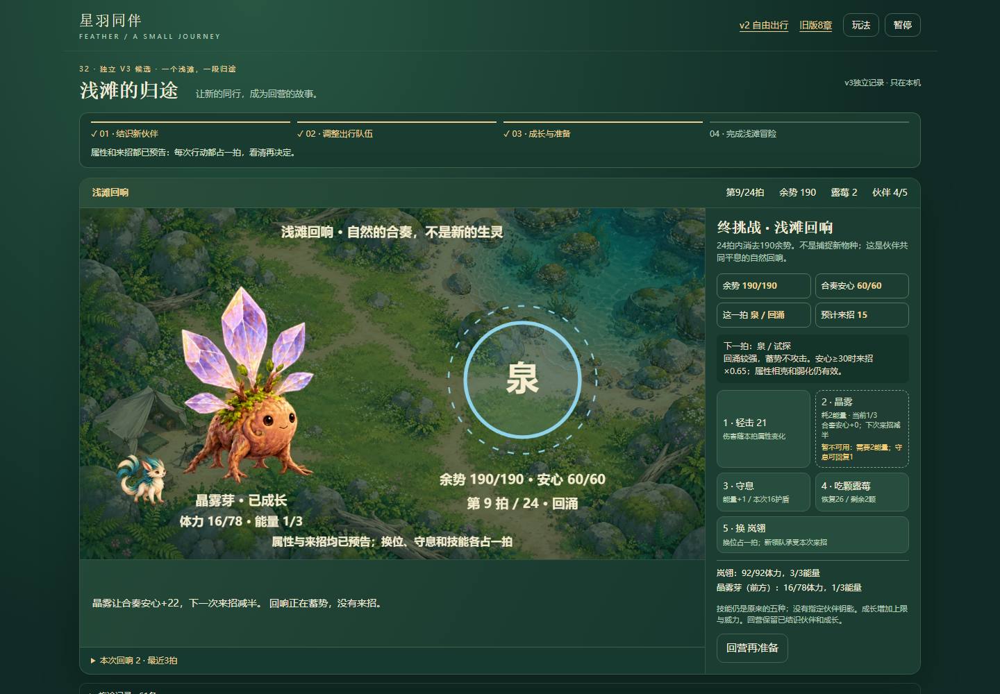
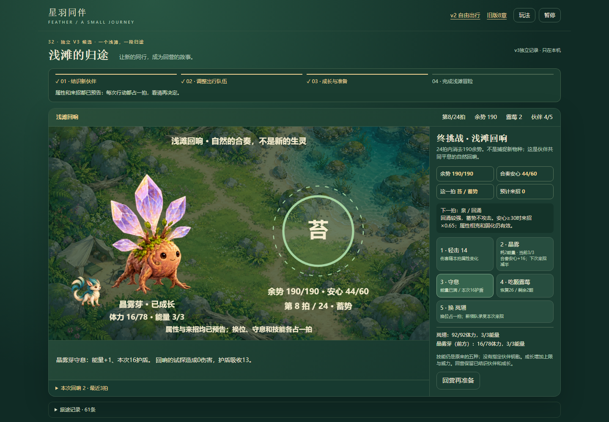
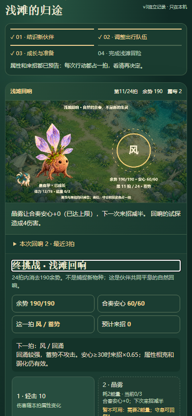
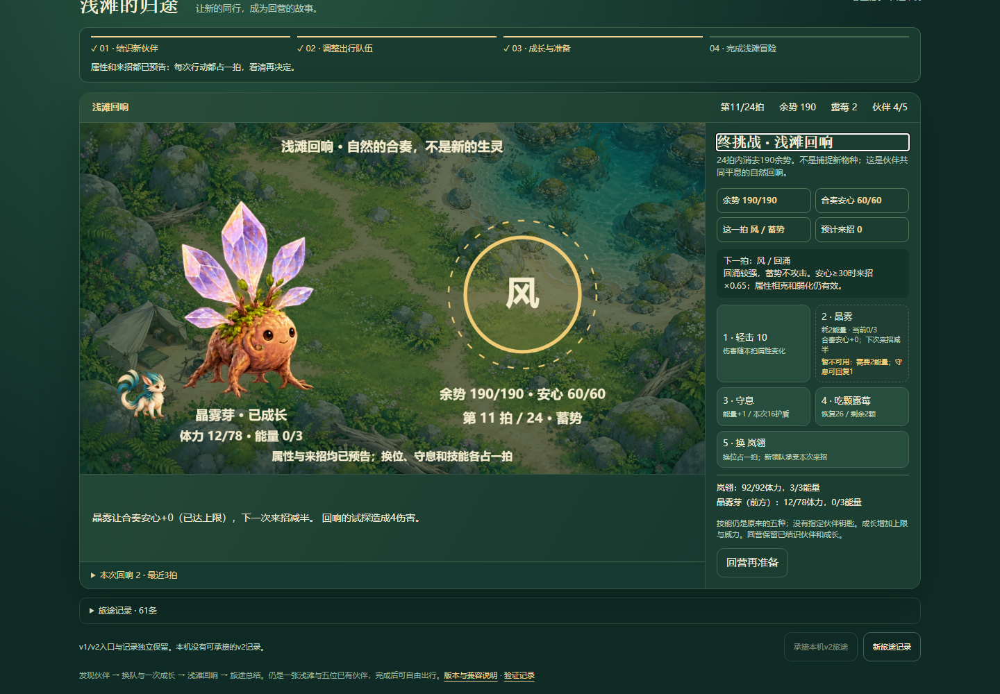

星羽v3：安心封顶按实际反馈
普通UI确认44→60实际+16，旧即时提示写+22。仅修结果显示；基础技能、上限、减伤、规则与存档不改。
试玩 · 判断与边界 · 修改前普通UI · 修改后普通UI · 8组边界测试 · 前批10组回归 · 收束与下一候选 · 覆盖索引
- 修复前7次/本地修复后9次普通按钮，沿用先前赚取的独立真实profile；没有注入状态或重新通关。
- 1440和390CSS：部分封顶+16、已满+0、无效操作、只读展开、刷新状态和存档字节保持。
- 另一技能54→60、能量下限等为合法离线模型证据，不能混称普通UI。线上部署后另行验证。
- 星羽本轮收束，无已确认高优先阻断遗留；下一候选为远征调兵来源，只是源码线索。真机/手感/审美未验收。
修复前：实际44→60，即时提示仍写+22（390 CSS）修复后：同样44→60，行动结果显示+16（390 CSS）
修复前：桌面实际封顶与旧提示修复后：桌面+16，技能预览已是满值+0
行动前：基础22，本次预览+16，执行后实际增加16
满值再次使用：+0（已达上限），减伤作用仍保留
桌面零增量，能量不足的技能保持禁用刷新承接原记录：实际零增量提示保留